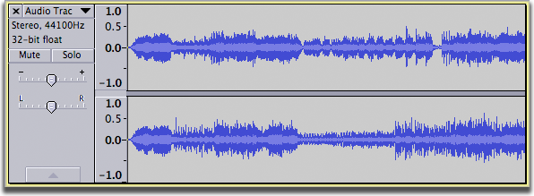
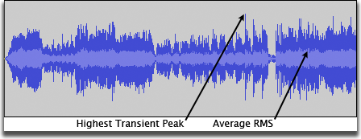
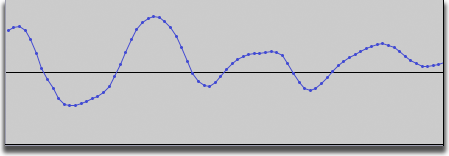
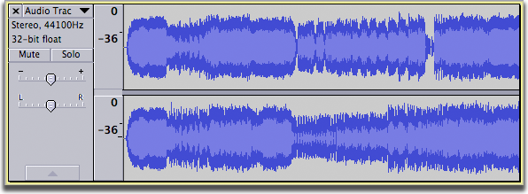
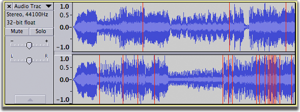

Audacity Waveform
From Audacity Manual
Default Waveform view
The default track created in Audacity when you press the record button is a stereo track displayed in Waveform view with a linear vertical scale running from -1.0 (negative values) to +1.0 (positive values), centered on zero (provided you have not changed Audacity's default for the display). You will also get a waveform like this if you import a stereo audio file into Audacity.
Stereo Tracks contain a Track Control Panel and a Vertical Scale to the left with two waveforms on the right.
The upper waveform represents the left channel and the lower waveform represents the right channel as in this example:
- 
When the waveform is taller (that is, its top and bottom lie closer to +/- 1 so filling more of the vertical space in the track), the audio is louder. When the top and bottom of the waveform lie closer to the zero line, the audio is quieter.
The waveform view uses two shades of blue, one darker and one lighter.
- The dark blue part of the waveform displays the tallest peak in the area that pixel represents. At default zoom level Audacity will display many samples within that pixel width, so this pixel represents the value of the loudest sample in the group.
- The light blue part of the waveform displays the average RMS (Root Mean Square) value for the same group of samples. This is a rough guide to how loud this area might sound, but there is no way to extract or use this RMS part of the waveform separately.
- 
If you zoom in horizontally far enough, the light blue display will disappear, because there are not enough samples to provide a meaningful average in the region being displayed. The line you see now represents the peak level of the samples, that is the top of the darker part that you saw when you were zoomed out.
Below is an example of a dark blue only waveform, obtained by zooming in about 12 times. The waveform can now be clearly seen as joining together many individual sample points (the dots). The horizontal center line denoting zero amplitude (silence) can also now be clearly seen, with positive samples above the center line, and negative samples below.
- 
Waveform (dB) view
The waveform view can be switched to a dB logarithmic view by clicking on the track name (or the black triangle) in the Track Control Panel.
The default linear Waveform view is very convenient for editing since the majority of audible work is on the screen. When zoomed in edit points are easy to find. However, the linear waveform doesn't correspond to the way your ears work--they sense quiet sounds more effectively. Halving the volume on the linear scale (for example, deamplifying a sound with a peak of +/- 1.0 by -6 dB to bring it to +/- 0.5 on that scale) doesn't sound all that much quieter. Human hearing would need a reduction of -18 dB to make audio "appear to sound" half as loud.
The following example is exactly the same recording as that above displayed in Waveform (dB) view.
- 
This view shows that the recording has been made loud enough and fills the display nicely.
A waveform with clipping
Below is an example of an oversaturated recording where clipping has occurred, that is, the signal has exceeded the maximum allowed level. The vertical red lines show where clipping has happened; these clipping indicators can be turned on and off (Audacity default setting is "off") by selecting
- 
Avoiding and repairing Clipping
It may be tempting to monitor the level of your recording by observing the blue waveforms, however it is much easier (and more accurate) to use the Meter Toolbar especially if you have enlarged it. The blue waveform becomes useful when you come to perform the editing after the recording has been made.
When recording, always set your input level to try and avoid clipping, and keep your eyes on the red hold lights to right of the Recording Meter for signs of clipping when either playing or recording.
If there is only a little bit of clipping (just the tops of a few isolated peaks), can be applied to just the clipped sections. This will attempt to reconstruct the missing peaks by interpolating the lost signal. In other cases where there is mild distortion throughout a recording, using to reduce the higher frequencies can help to mitigate the damage. Sometimes a bass cut will help also by making the result sound less "muddy".
Alternative audio view formats
See Audio Track Dropdown Menu for information on the alternative audio track view formats Spectrogram and Pitch (EAC). These are not documented here as they are not true "waveform" views.